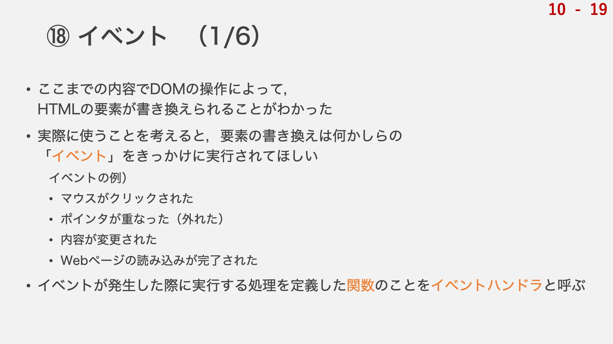
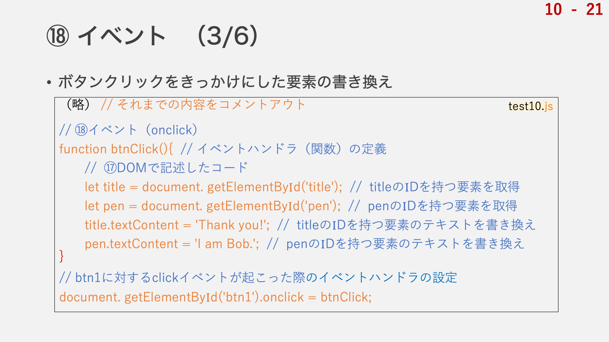
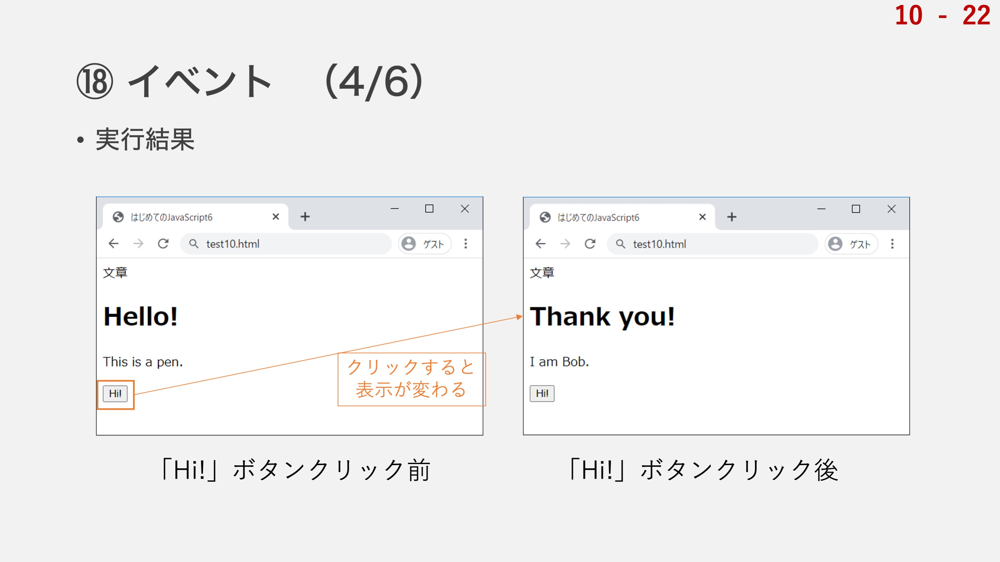

続いての項目は「イベント」です．
いよいよJavaScript入門の最後の項目となります！
ここまでの内容でDOMの操作によってHTMLの要素が書き換えられることがわかったと思いますが，そもそもページを開いた瞬間にJavaScriptで指定された文章に書き換えられるくらいなら，最初からHTMLの文章を編集した方が早いですよね．
DOMオブジェクトの内容の書き換えを実際に使うことを考えると，要素の書き換えは何かしらの「イベント」をきっかけに実行されてほしいわけです．
イベントというと，例えば「マウスがクリックされた」とか，「ポインタが重なった」とか，「指定の時間を過ぎた」とかですね．
あるイベントが発生したときに「この関数を実行して」とプログラミングしておくと，マウスがクリックされた際などにあらかじめ仕込んでおいた関数が動作して，表示が変わったりといったことが実現できるわけです．
このとき，イベントに付随して実行される処理を定義した関数のことをイベントハンドラと呼びます．
↑の吹き出しをクリックすると，音声が読み上げられます．（環境依存あり）
では，ここでイベントというものに関するプログラムをどう書けばいいのかを学ぶために，さきほどtest10.htmlに用意した謎の「Hi!ボタン」を使用します．
このボタンがクリックされた暁にさきほどの文章の書き換えが実行されるようなプログラムとしたいと思います．
まず，ボタンのDOMオブジェクトのプロパティの中の「クリックされた」という項目を設定しなければいけません．
これは，「onclick」というプロパティによって設定できます．DOMオブジェクトには，あらかじめこのonclickというプロパティが存在しますので，そこにイベントハンドラを設定しいきます．
イベントに対するイベントプロパティの設定の方法は，
DOMオブジェクト.イベントのプロパティ = イベントハンドラ;
という具合に書きます．例えば，上記のHi!ボタン(IDは'btn1')がクリックされた際のイベントハンドラを設定したい場合には，
document.getElementById('btn1').onclick = イベントハンドラ;
と記述します．
例えば，btnClickという名前の関数を定義して，これをボタンがクリックされた際の処理としたい場合には以下のように書きます．
document.getElementById('btn1').onclick = btnClick;
ここで，関数本体の定義はまた別の箇所で行います．

では実際にプログラムを書いてみましょう．
ここで書いていただくのは，「Hi!ボタン」がクリックされたというイベントをきっかけに先ほどのDOMオブジェクトの要素の書き換えを行うというプログラムです．
まずは普通に関数の定義を行います．btnClick関数として，その中でtitleとpenのtextContentの書き換えを行います．
関数なので，定義しただけでは実行されませんね．
この関数をイベントハンドラとして，イベントが起こった際に発動させることにします．
最後の1行がまさにイベントハンドラの設定です．
序盤の「document.getEkementById('btn1')」の部分がDOMオブジェクトに相当する部分ですね．
このオブジェクトの「.onclick」，つまりこの要素がクリックされたとき，に，「btnClick」という関数を実行してくださいというプログラムとなります．
実際にプログラムを書いてみましょう．

これが実行結果です．
いかがでしょうか？
Hi!ボタンをクリックしたら文章が書き換えられたでしょうか？
もしうまくいかない場合にはコンソールにエラーメッセージが出ていないかを確認してみてください．
注意深く１行ずつ記述していけばうまく動作するはずです．
次はボタンのクリック以外のイベントに対するイベントハンドラの設定の例を紹介します．
ちょっと地味な例ですが，「Webページの読み込みが完了した」というイベントの例です．
今のところ，HTMLソース内でJavaScriptファイルを読み込むscriptタグは，bodyタグの末尾に置かれています．
ただ，これが嫌だというケースがあります．
今までのようにheadタグの中にまとめて置いておくことで，たくさんのscriptタグを併用している際に，どのようなscriptが使われているのかがすぐにわかって便利だったりするのです．
ただ，上に置いてしまうとそれより下で定義されたHTMLの要素が取得できないという問題があったわけですよね．
そこで，「読み込みが完了した」というイベントをきっかけに要素を取得する処理を書くことで，NULLオブジェクトを参照するようなエラーに悩まされずに済むようになります．
読み込みのことを「load」と言いますが，このloadイベントが起きたときにイベントハンドラが実行されるような記述をします．
次のスライドで実際にプログラムを書いてみましょう．
「HTMLソースの読み込みが完了してから」処理を実行するプログラムを書きます．
が，その前にまず，先ほど移動させたtest10.html内のscriptタグの位置を元に戻しましょう．
headタグの中に再移動です．
loadに関するイベントのプロパティはonloadです．
ここで，何がロードされたかというところが重要なのですが，画面全体がロードされたことをきっかけに処理を実行したいので，windowというオブジェクトのonloadに対してイベントハンドラを設定します．
windowというオブジェクトもdocumentオブジェクトと同様にブラウザが生成してくれるオブジェクトとなっており，表示される画面に関連した情報を含んでいます．
こちらのプログラムを書いた状態でtest10.htmlを開いてみると，scriptタグが上部にある状態でも，エラーを起こさずに文章の書き換えを行うことができているのが確認できるかと思います．
なんと，以上で全19項目のJavaScriptプログラミング入門の内容の学習の終わりです．
ここまでよく頑張りました！
これで今まで学んだことを応用して色々なWebプログラムが書けるようになっている，，，はずです．
とはいえもう少し応用力というのを身につけないといけませんので，その辺りについては来週から少しずつ扱っていきたいと思います．
ひとまず，JavaScript入門の内容はこれで終わりです．
本当にここまでよく頑張りましたね！
今日の講義はもう少し続きます．